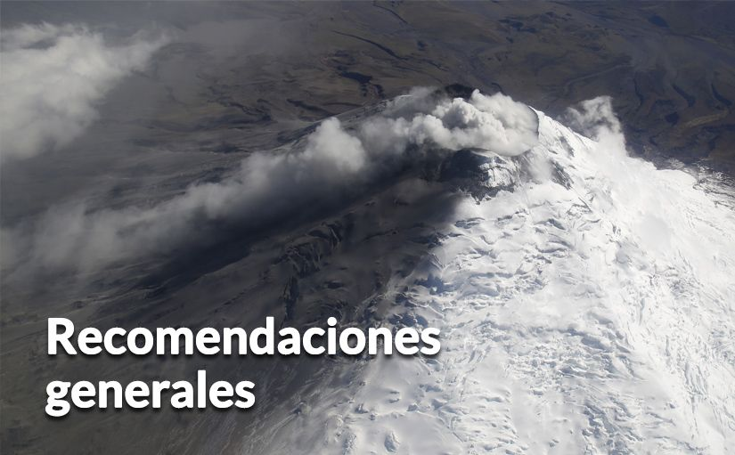

Identifica tus sitios seguros, rutas de evacuación, familias acogientes más cercanas y albergues.
Identifica tus sitios seguros, rutas de evacuación, familias acogientes más cercanas y albergues.|  |
Mensajes para los habitantes de la zona de riesgo: Latacunga, Mejía, Rumiñahui, Quito, Napo y Salcedo.
Identifica tus sitios seguros, rutas de evacuación, familias acogientes más cercanas y albergues.
Confirma que tu plan familiar contemple los siguientes tópicos:
Realiza simulacros de evacuación con tu familia, tomando en cuenta distintas situaciones: familia junta, separada, de día, de noche,
entre semana o fin de semana; y, revísalo permanentemente.
Elabora tu mochila de emergencia con las tres A: alimento, abrigo y agua para al menos 3 días. Incluye radio con pilas, linterna con pilas, velas y fósforos.
Verifica que en tu mochila de emergencia estén copias de tus documentos personales, títulos de propiedad, escrituras, tipo de sangre de cada miembro de la familia y números de teléfonos importantes.
Ten a mano alimentos que no se dañen rápido y vajilla desechable.
Si hay caída de ceniza, protégete con mascarilla, toalla o bufanda; gorro y lentes: más cubierto, más seguro.
Lleva en tu auto una mochila de emergencia con las 3 A: alimentos, abrigo y agua. Incluye botiquín, batería extra del celular, herramientas, cuerda para remolcar, filtros de aire y aceite extras.
Mensajes para los habitantes ubicados fuera de la zona de riesgo.
Infórmate en canales oficiales:(www.gestionderiesgos.gob.ec) y si tienes alguna emergencia, llama al 9-1-1.
Si hay caída de ceniza, protégete con mascarilla, toalla o bufanda; gorro y lentes: más cubierto, más seguro.
Si tienes familia que vive en zona de riesgo, comunícate frecuentemente y estima en qué puedes ayudar.